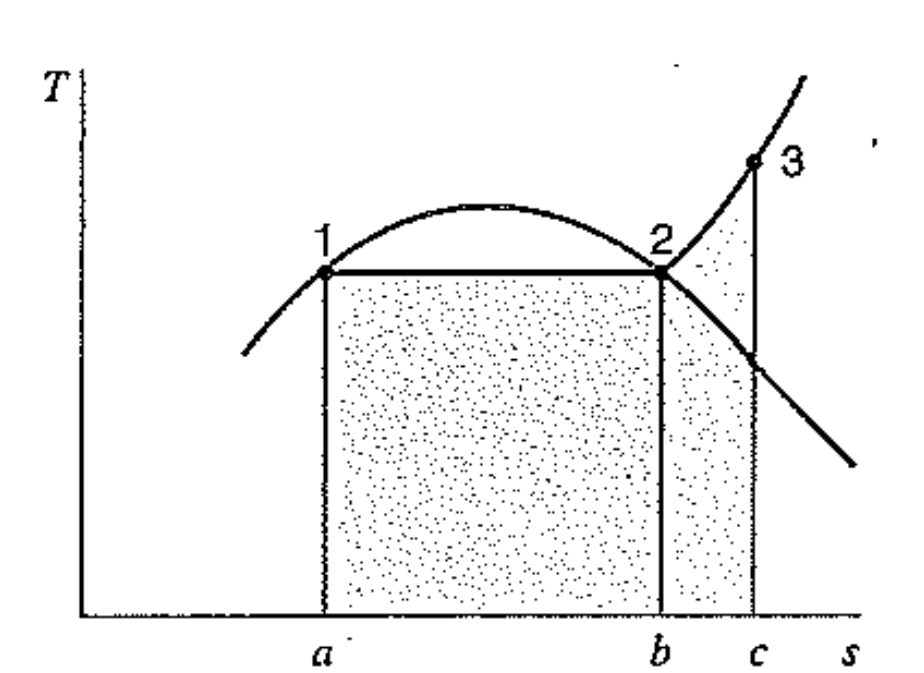
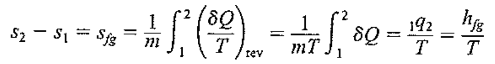
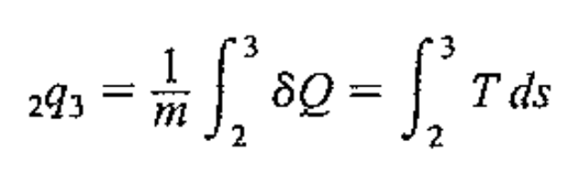
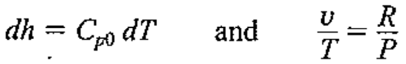
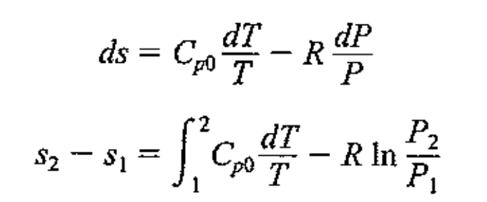
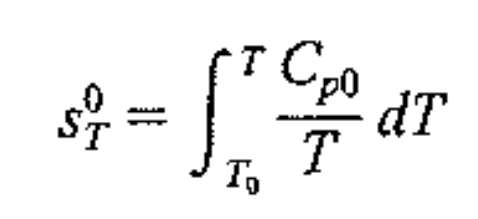

[Thermodynamics] Ch 6. Entropy - Thermodynamic relation
직전 포스터에서
Inequality of Clasius 와 Entropy의 개념
에 대해서 배웠다.
그렇다면, 카르노 cycle에서 entropy변화를 살펴보자.
앞으로, 엔트로피의 그래프는 대부분 T-s 그래프로 표시된다,
그 이유는 dQ = Tds 즉, 그래프의 면적으로 열 계산 가능하기때문.
![[Thermodynamics] Ch 6. Entropy - Thermodynamic relation](./images/img-001.png)
먼저, 1 -> 2에서 받은 열은,
![[Thermodynamics] Ch 6. Entropy - Thermodynamic relation](./images/img-002.png)
다음, 3 -> 4에서 잃은 열은,
![[Thermodynamics] Ch 6. Entropy - Thermodynamic relation](./images/img-003.png)
따라서, 카르노 기관의 효율은
![[Thermodynamics] Ch 6. Entropy - Thermodynamic relation](./images/img-004.png)
그래프의 면적을 통해서, 바로 도출 할 수 있다
(T-s 그래프의 장점)
이번에는 둥근 saturated line이 있고,
1->2 Saturated Liquid to Vapor
2->3 Saturatd to Superheated Vapor

이때, 1->2 과정에서 상변화에 가해진 열은
T(S_b - S_a)
일 것이다.
그리고, 같은 압력에서의 열이므로, dq = dh.
따라서, 1->2 엔트로피(질량포함) 변화량은 다음과 같다.

그렇다면, 2->3 가해진 열은 어떻게 알 수 있을까?

바로 우리가, T그래프의 함수를 알지 못하므로,
T-s 그래프의 면적을 통해서 유도할 수 있다.
(T-s그래프의 장점)
자 이제, 앤트로피에 대해서 알겠으니까,
다음 stage
다른 Property들과의 관계는 어떻게 될까??
시작은 두 Eq.
![[Thermodynamics] Ch 6. Entropy - Thermodynamic relation](./images/img-008.png)
https://jeffdissel.tistory.com/2
[Gas Dynamics] Ch 1 Basic properties
[Abstract] Before going deep in Gas dynamics, knowledges of fluid mechanics and thermodynamics are fundamentally required.Therefore, the Chapter 1 deals with the basic prerequisits for Gas dynamics 1. Density ( ρ ) [unit : kg/㎥ ] Fluid molecules 들은
jeffdissel.tistory.com
Gas dynamics 포스터에서 자세하게 증명해봤었습니다.
위 두식을 가지고, 다양한 case에서의
식들을 더 구체화 해보자.
1. Incompressible flow(solid, liquid)
2. Ideal gas
1.Solid or Liquid
Specific heat Cv = Cp = C로 동일하다고 하였다.
따라서, 내부에너지는 du = CdT
+
위에서, Tds = du + pdv = du
incompressible flow ( 밀도 변화 = 0) 이므로,
결국, Tds = du = CdT
![[Thermodynamics] Ch 6. Entropy - Thermodynamic relation](./images/img-009.png)
식을 자세히 살펴보면, Reversible adiabatic process의 경우,
ds = 0, 이므로 온도 변화가 없는 것을 알 수 있다.
(액체,고체 한정)
따라서, 펌프같은 경우 온도변화가 reversible process에서 존재하지 않는다.
- Ideal gas
위에서 구한 내부에너지-엔트로피 식에서,
![[Thermodynamics] Ch 6. Entropy - Thermodynamic relation](./images/img-010.png)
Ideal gas의 경우, 왼쪽의 Ideal gas specific heat로 내부에너지 표현가능,
오른쪽은 이상기체 상태방정식.
![[Thermodynamics] Ch 6. Entropy - Thermodynamic relation](./images/img-011.png)
대입해주면, 앤트로피 변화량은 다음과 같다.
![[Thermodynamics] Ch 6. Entropy - Thermodynamic relation](./images/img-012.png)
이제 엔트로피-엔탈피 식에서 시작해보자.
![[Thermodynamics] Ch 6. Entropy - Thermodynamic relation](./images/img-013.png)
constant pressure, Ideal gas specific heat (Cp0)
State Eq을 사용하자.

원래 식에 대입해주면, 최종적으로

여기서 다시 Ideal gas Specific heat에 대해서 생각해보자.
Specific heat는 only 온도에 의해서만 변하는 함수였다.
그리고 Specific heat 를 derive하는 방법에는 여러가지가 있었고, - 일정한 Specific heat
- 온도에 따른 함수로 표현 C = f(T)
- T0를 고정하고 T까지 적분 값을 구하는 것,
첫번째와 두번째는 Ch3 에서 설명을 했었다. 전부다 합리적이지만,
Entropy를 위한 비열은 3번째 경우를 사용하고,
S0_T : Standard Entropy라고 부른다.

그리고 Standard Entropy값들은 이미 계산되어 표에 명시되어 있기 때문에,
Entropy 의 변화량을 다음식으로 표현 할 수 있다.
![[Thermodynamics] Ch 6. Entropy - Thermodynamic relation](./images/img-017.png)